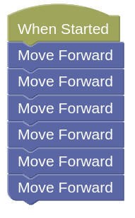
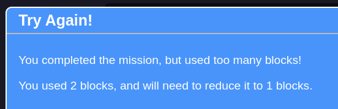
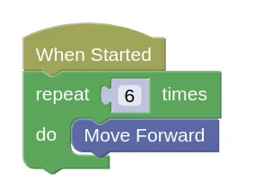
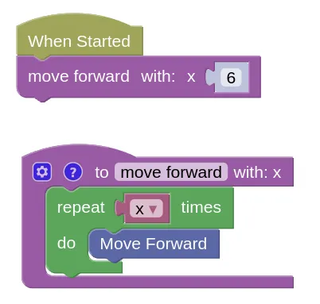

Challenges (Part 2)
Most of these challenges have a blocks limit. To help solve them, we will learn a new abstraction technique called Functions.
Example
This challenges is really easy...


...but you are only allowed ONE block!

We can reduce it down to 2 blocks using a loop...

...but how to get it down to 1 block?
We can use a function to solve this...
Functions takes a little bit more work to prepare, but now whenever we need to move forward, we can use the "move forward" function and tell it how many squares to move.

Create the move forward functions on your own device, and use it to solve the following challenges.
Challenges
For each challenge, click on the Simulator Tab, then the Mission button to see the mission you need to do.
Follow the instructions and note down the special Code after doing the challenge successfully!
Challenge 7
- Load this challenge
Challenge 8
- Load this challenge
Challenge 9
- Load this challenge
Challenge 10
- Load this challenge
Challenge 11
-
Load this challenge
-
The position of the green block is randomized. Use the sensor block to decide which way to turn.